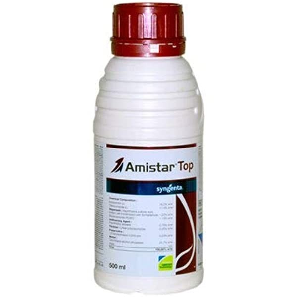

Technical Name: Azoxystrobin 18.2% + Difenoconazole 11.4% SC
Major Crops: Rice, Cotton, Wheat, Corn, Tomato, Hot pepper, Sugarcane, Turmeric, Onion
Mode of action: Provides both systemic and protective action, targeting a wide range of fungal diseases
Target Pest/Disease: Yellow rust, Powdery mildew, Late blight, Sheath blight, Downy mildew, Leaf spots, Grey mildews, Red rot
Dose: 200ml/acre
Presentation Available: 200ml, 500ml, 1ltr
Company: Syngenta